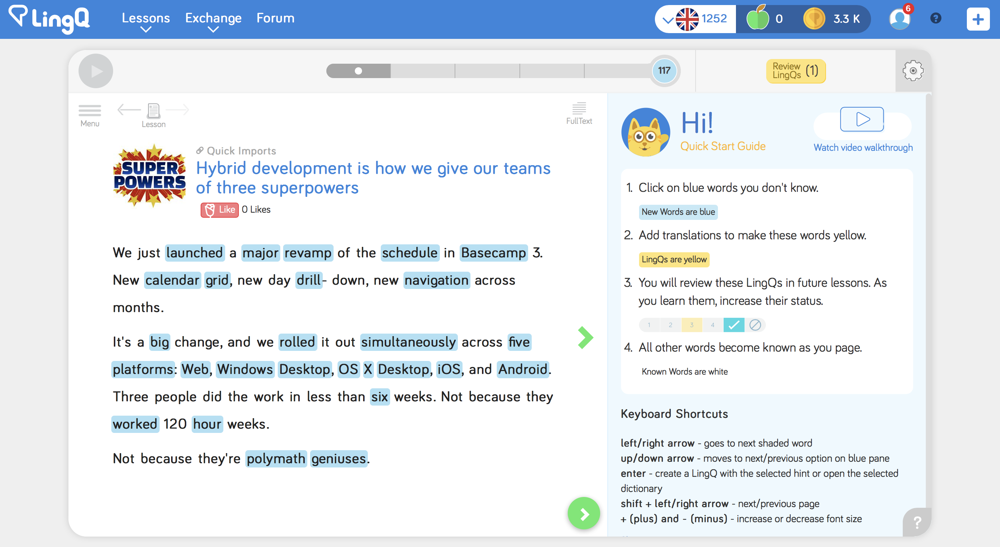
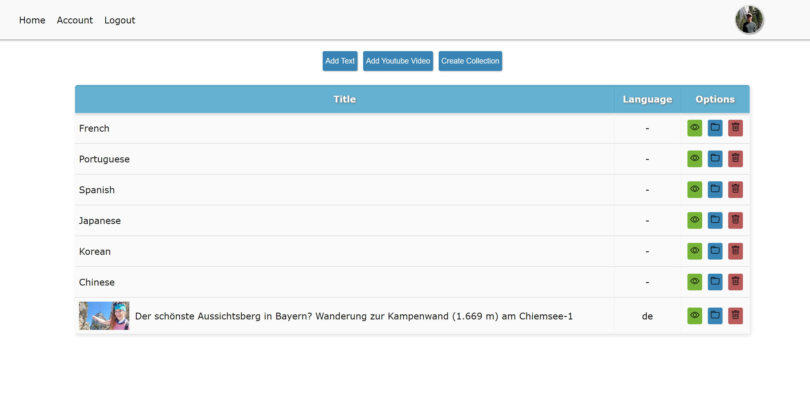
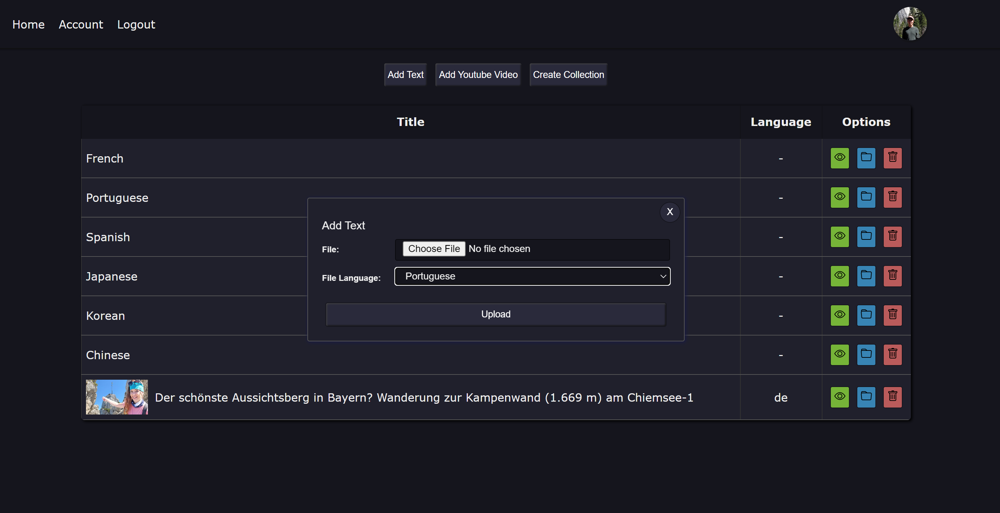
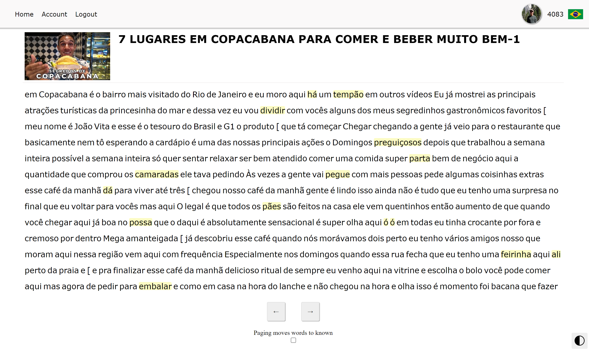
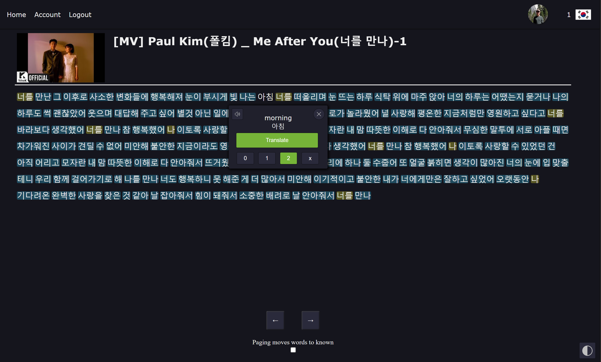
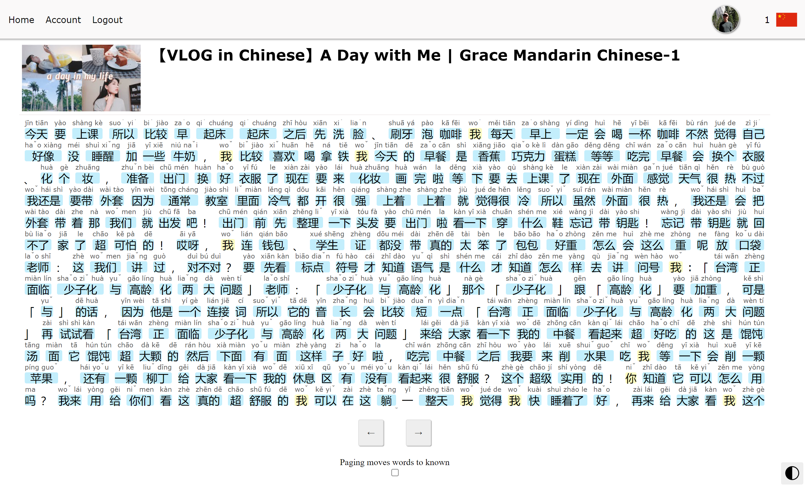
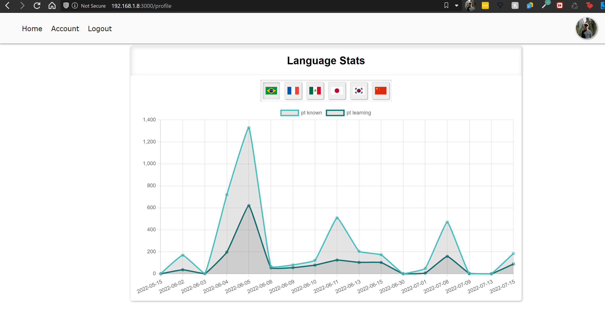
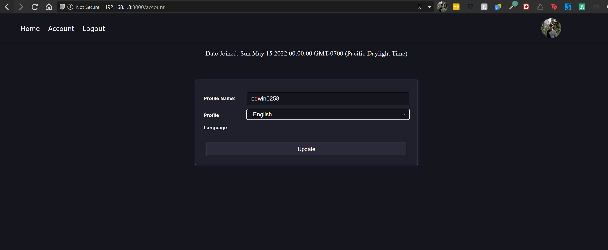

Foreign Language Reader Project
Overview
One of my passions is language learning. Unfortunately, the service I was using to learn languages called LingQ was expensive, and I couldn’t afford to continue using it. So I decided to make a similar application to LingQ from the ground up using Express.js and Node.js. While this application is far from done yet, it currently has all the basic functionality that I use regularly. This post will go over what my application can do, what it looks like, and more background information. Future posts might be updates on development as I make progress.
Technologies Used
Besides Express.js and Node.js, the other tools/technologies used were JavaScript (ES6), EJS, SCSS, PostgreSQL, Azure, Visual Studio Code, and Github.
LingQ
LingQ is a language learning website founded by Steve Kaufmann, a well-known polyglot in the language learning community. This website lets the user select words in texts and save these words as known, learning, and unknown. After clicking on a word in your target language, you can view translations in your native language and hear the word spoken. The site is great for immersing yourself in comprehensible input with a tool to aid you during the process. I highly recommend it if you can afford it!

Above is a picture of the old LingQ interface. The company recently released an update that changed the layout and feel of the website.
My Project
So, I decided to make an application similar in functionality and feel to LingQ. Over the past few months, I have slowly developed this application using Node.js/Express.js and other technologies. I will now go over the features I have implemented with pictures of page views.
Main View

This is the main page of the website after logging in. You can import pdf files, import youtube video captions, and group texts into collections (folders). Collections are used to group related texts, so this page is just the starting point before navigating through the collection system. Each text has three options on the side (3 different colored buttons). These buttons can delete a text, view a text, or move a text into an existing collection.
LingQ separates each language through a menu selection. With this approach, when you select a language, all texts and folders displayed are for that language. I decided to give the user more freedom to create collections and group different languages together if they wanted. The app only tracks which language you are using when you read a text.

Here is the same main page view but with dark mode toggled on. This dark mode toggle button is always in the bottom right corner. This image also shows one of the modal forms which allows the user to upload a pdf file for reading.
Reader View

The text reader view is where the user spends the most time. This view highlights unknown words in blue, learning in yellow, and known without a color. While a user reads, they can select words and move their status to learning or known. The user can also hear audio of words that they select and view translations provided by Google APIs. Every known word is added to a counter in the top right. There is also a checkbox option that moves all unknown words to known on a page when the user navigates to the next page.

The image above is the text reader view using dark mode. Here, a user clicked on a word to bring up options. You can see the selected word 아침 and the English translation. Below this, the word is set to status 2, which means it is known. The X status is for ignored words, 1 is for words being learned, and 0 is for unknown words.
Languages using other characters

Recently, other languages that use different characters were added. Currently, my application supports Korean, Chinese, and Japanese. When reading Japanese, Romaji is displayed with the characters. And when reading Chinese, Pinyin is displayed above the characters.
Stats View

The profile view currently displays the language statistics of a user. Depending on which flag button you select, it will display a graph (Chart.js) showing the words moved to the learning status and known status each day the user is active in that language. A user navigates to this page by clicking the circle with your profile picture.
AccountView

The account view lets the user change their native language. The app translates all words in the text reader view to the user’s native language, and displays text on other pages in their native language. The page also shows the date that the user joined the application. The user can change their username as well.
Azure
I was able to set up my website in Azure using a free trial. Unfortunately, the free trial has ended, so the website is currently not available for use by the public.
Future Updates
Here is a list of some of the future changes I hope to implement in the application:
- Add profile picture uploading
- More in-depth stats chart (More options to modify data displayed in charts on the page)
- More statistics for the user to view
- Adding more languages such as Arabic and Hindi
- Vocabulary view for reviewing words being learned or known in a language
- Increased security
- More text importing options besides PDF and YouTube
- Listen to text in the application
- Saving phrases
- More gamification
- Learning progress emails
- Keyboard shortcuts
If I implement enough of these features, I might make another blog post talking about my progress.
Conclusion
My project is far from done, but at this point, I am enjoying using it for reading and language learning almost daily. It has been good programming practice, and I’ve had a good time developing it. I am excited to see what I do with it!
View the first update post here: Language Reader Development Progress Update 1
Thanks for reading!
Devin Miller